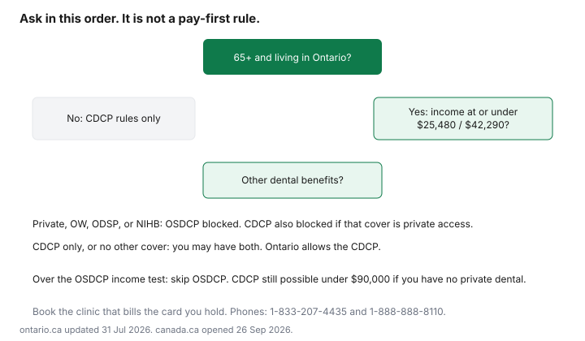

Healthcare · Canada
Ontario Seniors Dental Care Program vs the Canadian Dental Care Plan: Which One Applies to You
Ontario seniors now see two public dental programs with similar income numbers and different counters. The Ontario Seniors Dental Care Program is a provincial program delivered through public health units and partner clinics. The Canadian Dental Care Plan is a federal plan billed through Sun Life at participating providers. You can meet one test and fail the other. This comparison uses the ontario.ca seniors page updated 31 Jul 2026 and the canada.ca qualify and coverage pages opened 26 Sep 2026. It is not dental advice. If the two programs disagree at the clinic, phone them rather than guessing which card pays first.
Key takeaways
- OSDCP: 65 or older, Ontario resident, annual net income $25,480 or less single or $42,290 or less as a couple, and no other dental benefits except the CDCP.
- CDCP: adjusted family net income under $90,000, taxes filed, Canadian tax residency, and no private dental access. A provincial social program does not by itself block it.
- The Ontario page says you may qualify for both. It does not print a which-pays-first rule. Ask the clinic and the program lines.
- OSDCP routine care is described as free. Dentures are partially covered. CDCP dentures are listed, and your federal co-pay still applies to the CDCP fee.
- OSDCP coverage ends 31 Jul each year. The CDCP benefit period ends 30 Jun. Those are different calendars.
OSDCP eligibility: 65+, Ontario resident, income under $25,480 single / $42,290 couple from 1 Aug 2026, no other dental benefits (CDCP allowed)
The seniors page, updated 31 Jul 2026, says you can apply if you are 65 or older, you live in Ontario, and your income meets the test: annual net income of $25,480 or less for a single senior, or combined annual net income of $42,290 or less for a couple. You must have no other dental benefits, including private insurance or coverage through Ontario Works, the Ontario Disability Support Program, or Non-Insured Health Benefits. The page names one exception: the Canadian Dental Care Plan. It also says you may qualify for the CDCP and still be eligible for OSDCP if you meet the OSDCP tests. The ministry checks income with your social insurance number against your tax return. You must have filed. A couple submits two applications.
The copy opened on 26 Sep 2026 states those dollar figures as the income requirements. It does not, on that version, add a separate sentence that they "start on 1 August." The page's update date is 31 Jul 2026, the day before 1 Aug. Use the figures on the page when you apply. Do not use an older bookmark that still says $25,000 and $41,500. Coverage, once you are enrolled, lasts up to one year and ends on 31 Jul no matter when you enrolled. The card in the welcome package expires on 31 Jul. Most clients are renewed automatically if taxes are filed. You reapply if you used a guarantor or if you did not file the years being checked.
The retiree bridge is the private pension dental you might still have. Pension dental is "other dental benefits" for OSDCP, and it is private access for the CDCP unless the federal opt-out exception applies. Read the pension booklet before you assume either public program is open. Income tests are not the same thing as the Guaranteed Income Supplement. A GIS internet discount is a different program, on the seniors' internet guide.
What each program covers and where coverage overlaps
OSDCP lists check-ups including scaling, fluoride, and polishing; repairing broken teeth and cavities; x-rays; removing teeth or abnormal tissue; anesthesia; treating infection and pain; and treating gum conditions. Some procedures have limits. The provider can explain the limit for your mouth. Dentures and other prosthodontic services are partially covered, and the page tells you to ask the local public health unit for that portion. It does not print a percentage.
The CDCP coverage page lists exams, x-rays, scaling, fluoride, and sealants; fillings; root canal treatment; gum treatment; crowns, many of which need preauthorization; and removable prosthodontics. Complete dentures, including standard and temporary dentures, repairs, relines, and rebases are listed. Complete immediate and overdentures need preauthorization. Partial dentures need preauthorization. The federal plan pays a share of the CDCP fee based on income. It does not promise the clinic's full fee.
Overlap is the ordinary exam, the cleaning, the filling, and the extraction, described on both pages. The difference is where you sit and what you pay. OSDCP is delivered at public health units and partner clinics and describes routine services as free. CDCP is at providers who bill Sun Life, with a co-pay of 0, 40, or 60 percent of the CDCP fee, and a possible charge above that fee. The CDCP guide is the tier table. The quote guide is how to compare a private clinic's codes if neither program is the whole answer.
Using both: coordination rules (verify at draft)
The Ontario page says the CDCP is allowed and that you may have both. The federal qualify page says that if you have dental coverage through a provincial, territorial, or federal social program, you could still qualify, and that the plans may coordinate so coverage is not duplicated. Neither page, as opened on 26 Sep 2026, prints a sentence that says OSDCP always pays first, or that Sun Life always pays first, or a percentage split for a shared service. Canada.ca says it has province-specific coordination factsheets for providers. Those factsheets were not opened for this guide, so their rules are not restated here.
Ask the clinic which program it is billing for the code on today's appointment, and ask what you pay if the other program is on your file. Then confirm with the program if the answer is unclear. OSDCP: 416-916-0204, toll-free 1-833-207-4435, TTY 1-800-855-0511. CDCP members can call the Sun Life CDCP contact centre at 1-888-888-8110, the number on the federal renewal page. Do not pay a third party to "coordinate" the two cards. The OSDCP page also says the program does not send invoices. Treat an unexpected email invoice as something to verify by phone.
Where to get care: public health units, community health centres, participating dentists
OSDCP care, on the Ontario page, is through public health units, partner community health centres, and partner Aboriginal Health Access Centres. The full range varies by community. You present the OSDCP card at each visit. The page tells you to contact the local public health unit for where to book. A private dentist who does not deliver OSDCP is not an OSDCP clinic, even if that dentist sees other patients.
CDCP care is at an oral health provider who accepts CDCP clients and bills Sun Life. Participation is voluntary, on the federal provider page. Dental schools can bill, and they might not. Use Sun Life's provider search, named on the renewal page, or call 1-888-888-8110. A clinic can be a CDCP biller and not an OSDCP site. Book the program that matches the chair you are sitting in.
Dentures and co-pays under each program
OSDCP: dental prosthetics, including dentures, are partially covered. The page does not print the patient share. Ask the public health unit before the impression. Routine services on the same page are described as free, which is a different sentence from the denture sentence. Do not assume a denture is free because an exam is.
CDCP: complete dentures are listed, partial dentures need preauthorization, and your co-pay tier still applies to the CDCP fee. Under $70,000 adjusted family net income the co-pay on that fee is 0 percent, and you can still owe an amount above the fee. From $70,000 to $79,999 the co-pay is 40 percent of the fee. From $80,000 to $89,999 it is 60 percent. Someone at the OSDCP income limits is under $70,000, so if they also qualify for the CDCP their federal co-pay on the CDCP fee is 0 percent. That does not make a private denture bill zero, and it does not tell you the OSDCP partial share. Get both answers in writing before you approve a lab fee.
| Question | Ontario Seniors Dental Care | Canadian Dental Care Plan |
|---|---|---|
| Eligibility | 65 or older, Ontario resident, taxes filed. No other dental benefits except the CDCP. | Under $90,000 adjusted family net income, taxes filed, tax resident, no private dental access. A social program may still allow you to qualify. |
| Income test | $25,480 or less single, $42,290 or less couple, as printed on the page updated 31 Jul 2026. | Less than $90,000 adjusted family net income. Co-pay tiers inside that cap. |
| Covered services | Exams, cleaning, fillings, x-rays, extractions, some surgery, gum treatment. Limits apply. Dentures partial. | Prevention, basic treatment, many major services. Crowns and partial dentures need preauthorization. Complete dentures are listed. |
| Co-pays | Routine services described as free. Dentures partially covered. Percentage not printed. | 0, 40, or 60 percent of the CDCP fee, plus any charge above that fee. |
| Where | Public health units, partner community health centres, partner Aboriginal Health Access Centres. | Providers who bill Sun Life. Participation is voluntary. |
| How to apply | Online or by mail to Station P, P.O. Box 159, Toronto ON M5S 2S7. Two applications for a couple. | Through the federal application. Renewal for the current period closed 1 Jun 2026. A missed renewal is a new application and a gap. |

A decision flowchart for Ontario seniors
Start with age and province. Under 65, OSDCP does not apply. Use the CDCP guide and, if you are retiring, the retirement insurance review for pension dental. At 65 in Ontario, compare income with $25,480 or $42,290. Over those limits, OSDCP is not the program. The CDCP remains possible up to just under $90,000 adjusted family net income, if you have no private dental access.
If you are under the OSDCP limits, ask whether you have any dental benefit other than the CDCP. Private insurance, Ontario Works dental, ODSP dental, and Non-Insured Health Benefits block OSDCP on the page. The CDCP does not. If you are blocked, the private plan is what you use, and the gap guide is the comparison if that plan is thin. If you are not blocked, you may have OSDCP, the CDCP, or both. Book OSDCP at a public health unit or partner clinic for services that clinic provides. Use a Sun Life-billing provider for CDCP services the public clinic does not offer, and ask what you will pay before you approve denture work.
Bring the card that matches the clinic. An OSDCP card does not make a private CDCP dentist an OSDCP provider. A CDCP enrolment does not move your appointment into a public health unit. When in doubt, phone 1-833-207-4435 or 1-888-888-8110 before the appointment, not after the invoice.
Sources & date stamps
- Ontario, Dental care for seniors, updated 31 Jul 2026. Income $25,480 and $42,290, CDCP exception, coverage list, partial dentures, delivery sites, 31 Jul end date, phones 416-916-0204 and 1-833-207-4435. Opened 26 Sep 2026.
- Canada.ca, CDCP qualify page. Four tests, social-program coordination sentence without a pay-first order. Opened 26 Sep 2026.
- Canada.ca, CDCP coverage and renewal pages. Denture list, co-pay tiers, benefit period ending 30 June, Sun Life 1-888-888-8110. Opened 26 Sep 2026.
- A 2026 newsroom release that would date the OSDCP income change to 1 Aug 2026 was not the page opened. The seniors page itself, updated 31 Jul 2026, is the figure used here. An older 2024 newsroom release described the previous $25,000 and $41,500 thresholds and is not the current test.
Frequently asked questions
Can I have both OSDCP and CDCP?
The Ontario page says the Canadian Dental Care Plan is the exception to no other dental benefits, and that you may qualify for the CDCP and still be eligible for OSDCP if you meet the Ontario tests. The federal qualify page says a provincial social dental program does not automatically block the CDCP, and that the plans may coordinate so coverage is not duplicated. Neither page opened on 26 Sep 2026 printed which program pays first. Ask the clinic, then phone 1-833-207-4435 or 1-888-888-8110 if the answer is unclear.
What are the OSDCP income limits?
The seniors page updated 31 Jul 2026 lists annual net income of $25,480 or less for a single senior and combined annual net income of $42,290 or less for a couple. You also have to be 65 or older, live in Ontario, and have filed taxes. Older figures of $25,000 and $41,500 are not the test on that page. The CDCP's own cap is a different number: adjusted family net income under $90,000.
Where do I get care under OSDCP?
Through your local public health unit, a partner community health centre, or a partner Aboriginal Health Access Centre. You show the OSDCP card at each visit. The range of services is not the same in every community. A private dentist who only bills the CDCP is not automatically an OSDCP clinic. Call the health unit to book.
Does OSDCP cover dentures?
Partially. The Ontario page says dental prosthetics, including dentures, are partially covered and tells you to ask the local public health unit. It does not print a percentage. Routine exams and fillings are described separately as covered services. The CDCP lists complete dentures and, with preauthorization, partial dentures, and your federal co-pay still applies to the CDCP fee.
Which program should I use first?
Use the program the clinic in front of you actually bills. For services a public health unit or partner clinic provides under OSDCP, start there if you are enrolled. For a provider who bills Sun Life, the CDCP is the file they can submit. Do not assume one card pays the other clinic's bill. Confirm the patient share for dentures before the lab starts. The pages opened here did not state a legal order of payment.